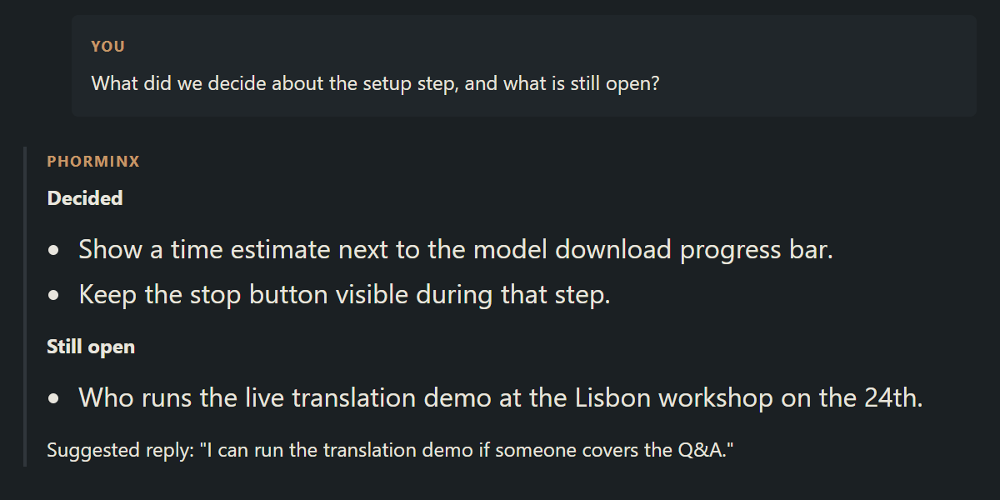

Companion assistant
Ask what you missed, while the call continues.
Answers include the transcript captured so far.
Capture keeps running while it thinks.
Local Ollama by default, or OpenAI or Anthropic with your own key.
